Kích thước ảnh bìa cho Fanpage & Facebook cá nhân cực chuẩn 2021

Ty Nguyen
CEO ❤️ AhaChat. Love babies & chatbot.
Ngày nào tôi cũng thấy các thương hiệu đăng tải những hình ảnh chất lượng khủng khiếp lên Facebook. Hình ảnh không được tối ưu hóa đúng cách để đáp ứng kích thước tiêu chuẩn của Facebook là một sự cố phổ biến có thể làm giảm hiệu ứng thu hút của trang hoặc bài đăng xuất sắc trên Facebook.
Trong bài này, chúng tôi sẽ cung cấp cho bạn kiến thức bạn cần để không chỉ đăng hình ảnh có kích thước phù hợp cho mọi loại hình ảnh trên Facebook mà còn đảm bảo rằng hình ảnh bạn đăng có chất lượng cao nhất (bao gồm cả hình ảnh kích thước sẽ sử dụng trong Các chiến dịch quảng cáo của Facebook và Chatbot).
Bạn có biết rằng sử dụng hình ảnh đúng cách có thể tăng mức độ tương tác của bạn trên bài đăng lên đến 300% không?
1. Ảnh cá nhân
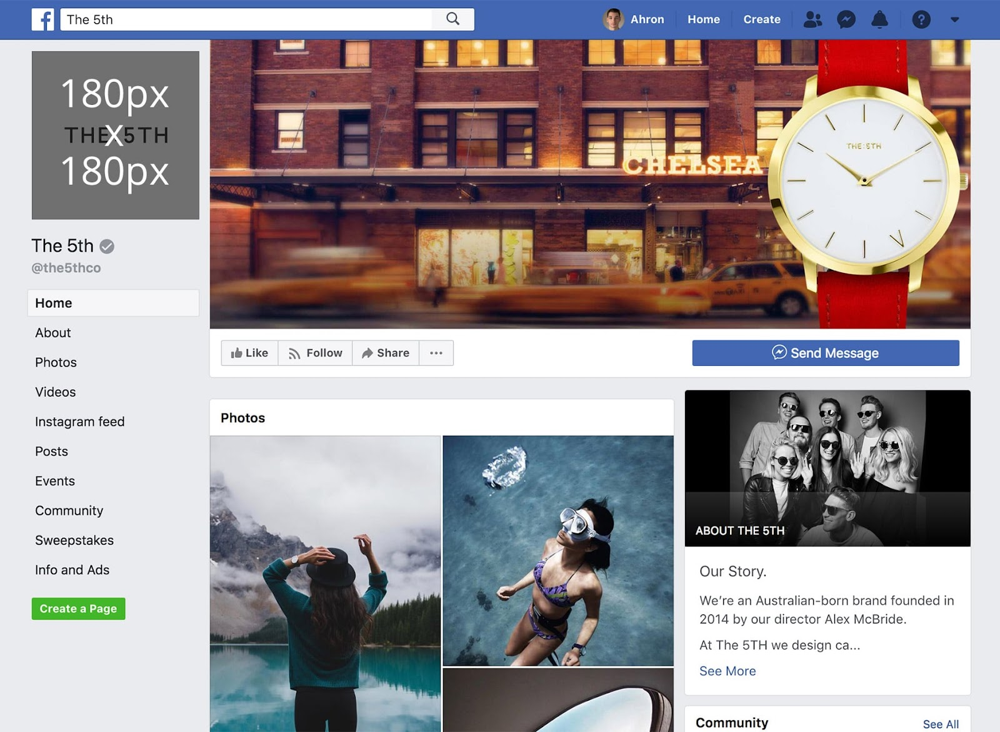
Hình ảnh hồ sơ là hình ảnh vuông/tròn được thay đổi kích thước thành 180 x 180px trên máy tính để bàn và 128 x 128px trên thiết bị di động.
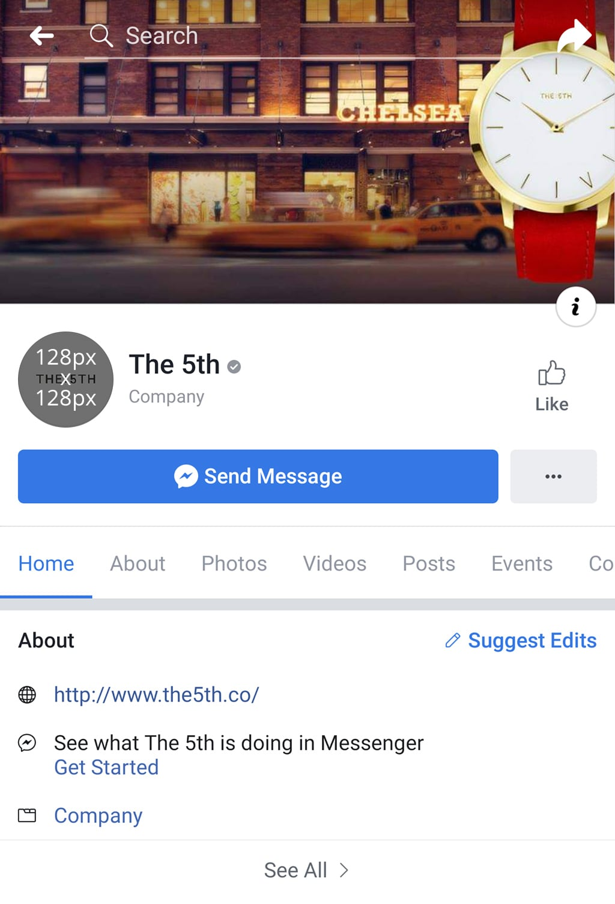
Hình ảnh bạn tải lên phải là 360 x 360px để có độ rõ nét tối ưu trên màn hình. Kích thước này lớn gấp đôi so với ảnh hồ sơ được hiển thị trên máy tính để bàn.
2. Ảnh bìa
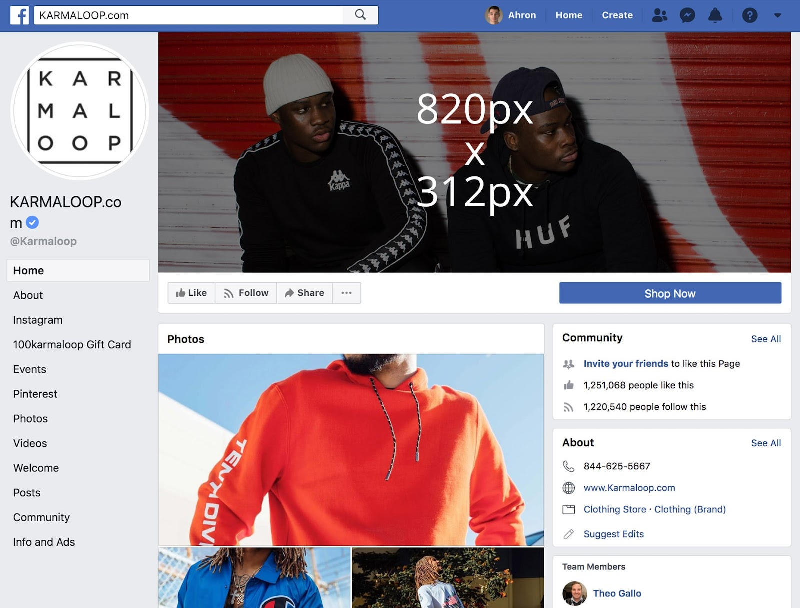
Đối với trang doanh nghiệp, ảnh bìa sẽ được thay đổi kích thước thành 820 x 312px trên máy tính để bàn và 640 x 360px trên thiết bị di động.
Bằng cách tải lên hình ảnh 1640 x 922px, ảnh bìa của bạn sẽ được tối ưu hóa hoàn toàn cho các thiết bị có độ phân giải cao và cũng phù hợp với các định dạng khác nhau của ảnh bìa trên máy tính để bàn và thiết bị di động.
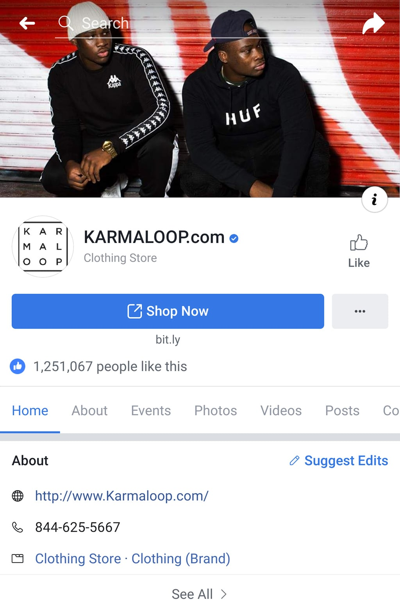
Điều quan trọng cần lưu ý là có một khoảng 75px nhỏ ở đầu và cuối hình ảnh của bạn sẽ được cắt ra để hiển thị trên màn hình.
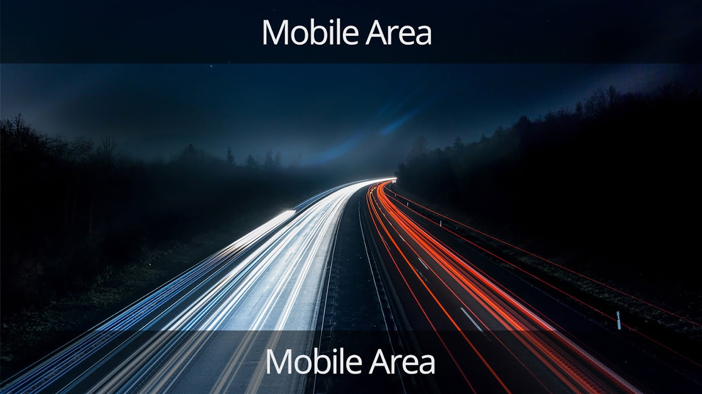
3. Ảnh sự kiện (event)
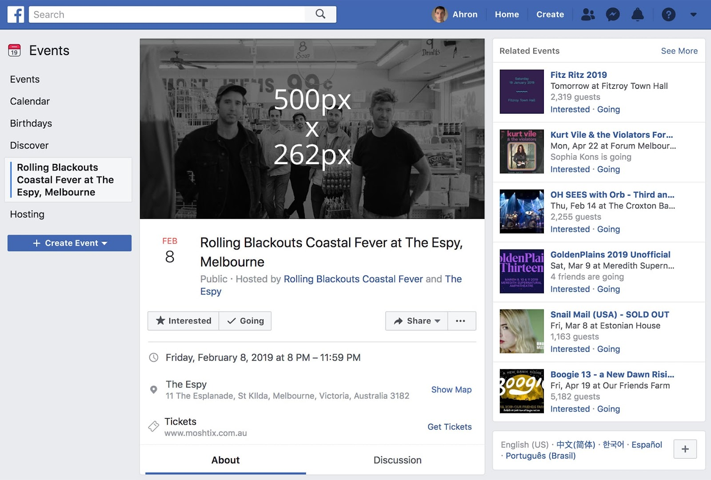
Hình ảnh sự kiện sẽ được hiển thị ở 500 x 262px trên máy tính để bàn. Hình ảnh sẽ được điều chỉnh theo các kích thước khác nhau khi xuất hiện trên thiết bị di động hoặc nguồn cấp tin tức.
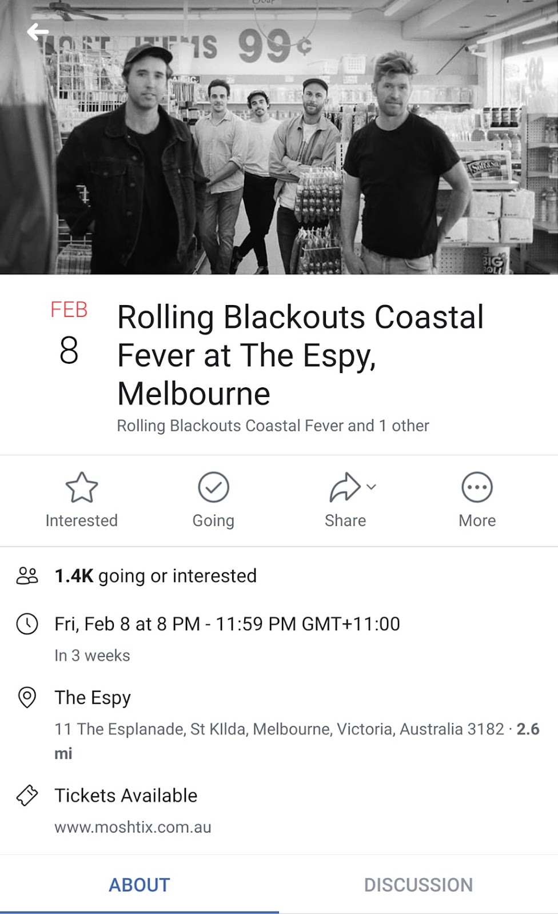
Để đảm bảo hiển thị tốt nhất trên tất cả các thiết bị, hình ảnh sự kiện bạn tải lên một lần nữa phải lớn gấp đôi kích thước của hình ảnh được hiển thị. Điều này có nghĩa là tải lên hình ảnh 1000 x 524px cho sự kiện của bạn.
4. Ảnh canvas (ứng dụng)
Mọi ứng dụng được cài đặt cho Tab Facebook đều có chiều rộng tối đa là 810px.
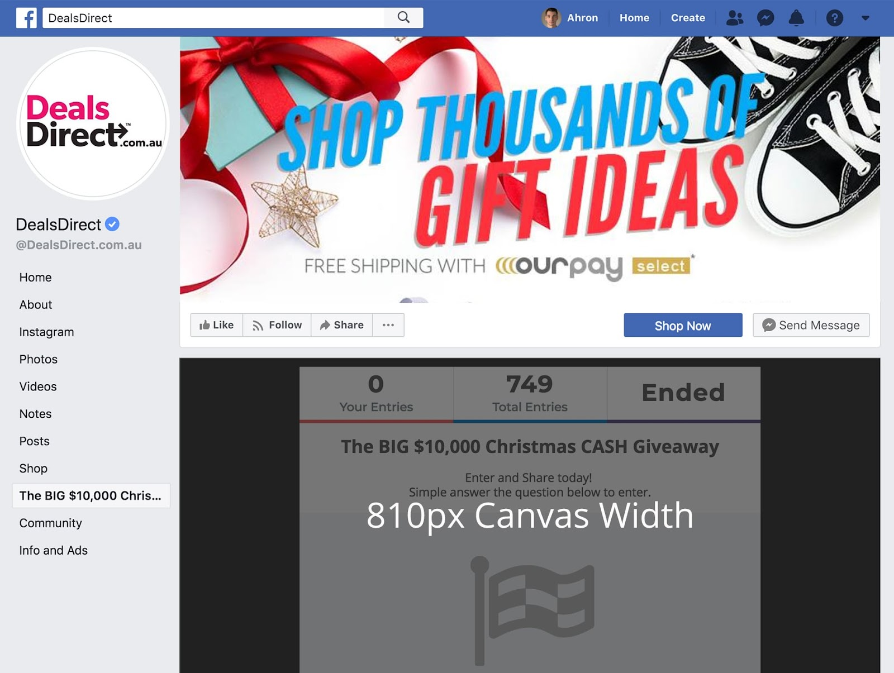
5. Ảnh liên kết được chia sẻ
Hình ảnh đi kèm các liên kết được chia sẻ trên trang cá nhân & dòng thời gian được thay đổi kích thước thành 500 x 262px khi hiển thị trên news feed. Facebook khuyến nghị rằng kích thước lý tưởng cho hình thu nhỏ liên kết được chia sẻ là 1200 x 628px, vì điều này sẽ phục vụ tốt nhất cho việc xem độ phân giải cao trên các thiết bị.
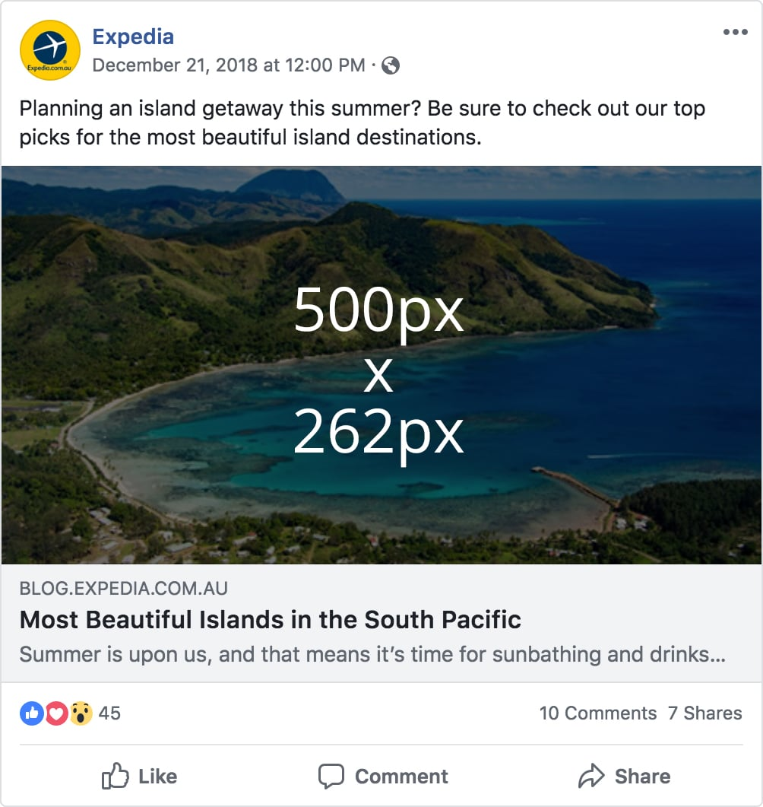
Nếu hình ảnh được liên kết với liên kết nhỏ hơn kích thước ở trên, Facebook sẽ tạo hình thu nhỏ 158 x 158px hoặc 139 x 139px để thay thế. Do đó, việc bao gồm các hình ảnh lớn hơn sẽ giúp bài viết của bạn thu hút được nhiều sự chú ý hơn.
6. Album ảnh
Hình ảnh bạn tải lên album ảnh sẽ hiển thị ở kích thước tối đa là 998 x 748px ở chế độ hiển thị tiêu chuẩn và lên đến 1440 x 880px ở chế độ toàn màn hình. Nếu bạn muốn hình ảnh được hiển thị ở kích thước tối đa trên các thiết bị có độ phân giải cao, bạn nên đảm bảo tải lên của mình có kích thước tối thiểu là 1996 x 1496px đối với hiển thị tiêu chuẩn tối đa hoặc 2880 x 1760px đối với hiển thị toàn màn hình tối đa.
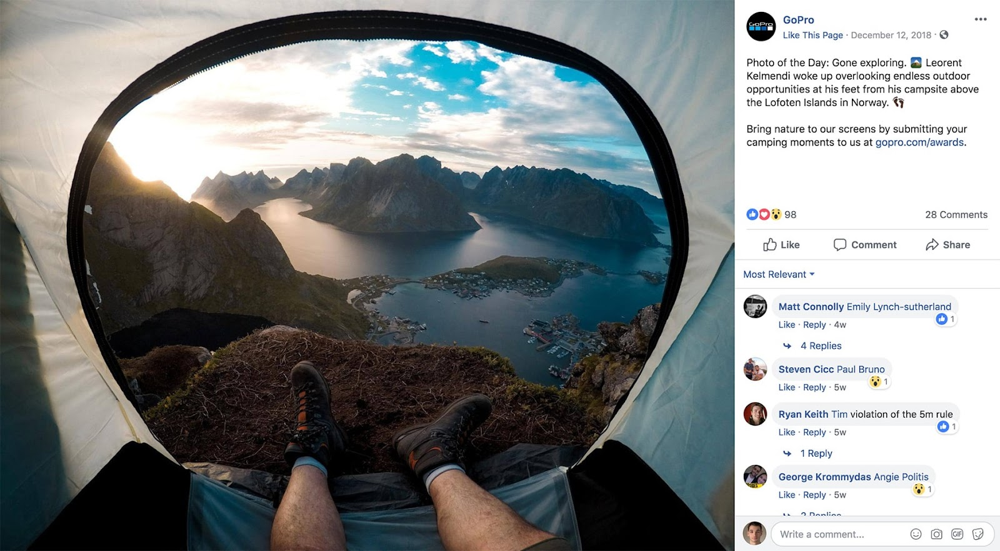
Nếu bạn muốn tránh các thanh màu đen xuất hiện ở trên cùng và dưới cùng hoặc các cạnh của ảnh album, bạn nên tải lên ảnh có kích thước ít nhất là 1320 x 1040px để hiển thị tối ưu trên các thiết bị có độ phân giải cao.
Vùng hiển thị album ảnh có chiều rộng tối thiểu là 660px và chiều cao tối thiểu là 520px. Các hình ảnh nhỏ hơn sẽ được kèm theo viền đen để lấp đầy kích thước hiển thị tối thiểu.
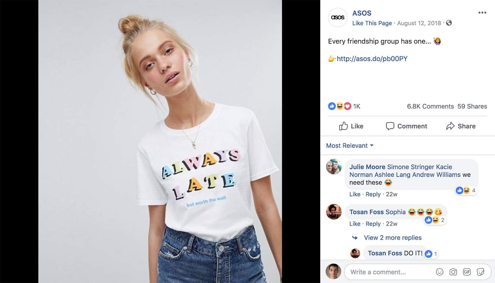
7. Ảnh dòng thời gian
Ảnh bạn đăng lên dòng thời gian của mình sẽ xuất hiện rộng 500px với chiều cao thay đổi để giữ nguyên hình dạng của ảnh. Chiều cao của hình ảnh không được vượt quá 750px nếu không có một số hình ảnh bị cắt trên màn hình dòng thời gian.
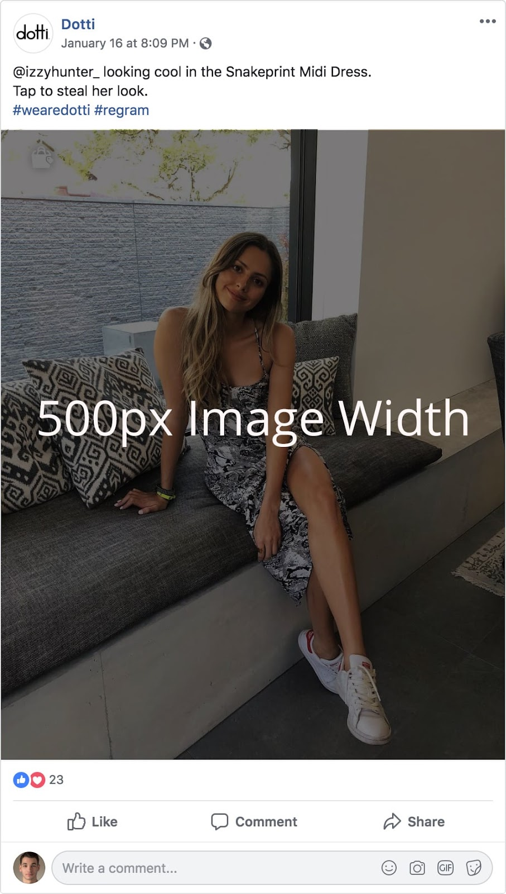
Để tối đa hóa độ sắc nét của hình ảnh, hãy thử tải lên một ảnh có chiều rộng 1000px, lớn gấp đôi so với kích thước hiển thị của hình ảnh.
8. Ảnh quảng cáo FB
Quảng cáo Facebook có thể xuất hiện ở nhiều vị trí bao gồm cả nguồn cấp dữ liệu tin tức trên điện thoại di động và máy tính để bàn cũng như ở cột bên phải của trang.
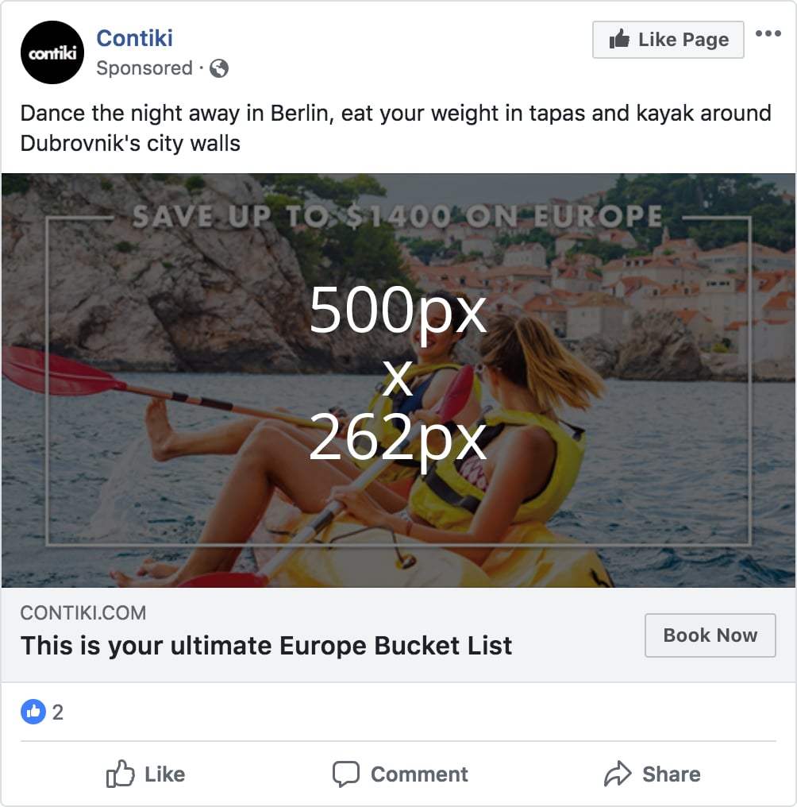
Facebook khuyến nghị rằng tất cả các hình ảnh quảng cáo có kích thước 1200 x 628px. Điều này sẽ tối ưu hóa chất lượng trên tất cả các thiết bị và đảm bảo thay đổi kích thước hình ảnh phù hợp trên tất cả các kiểu và vị trí quảng cáo.
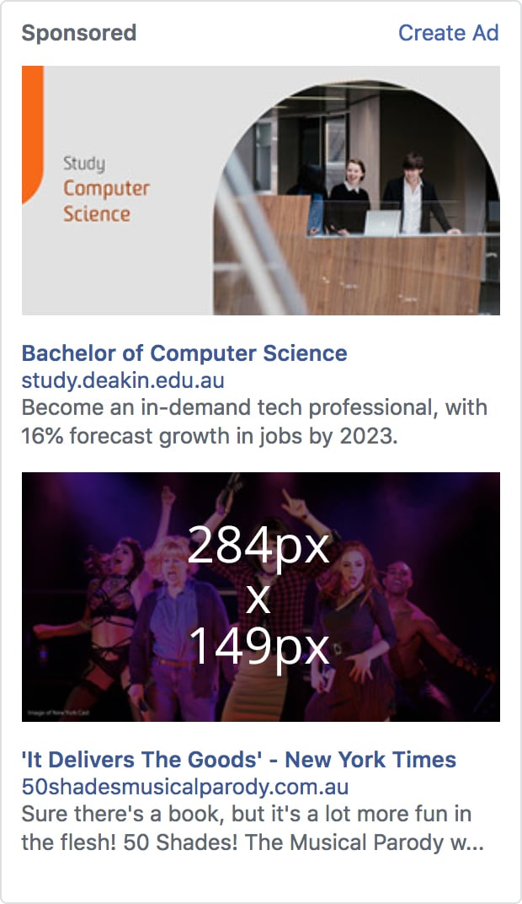
9. Ảnh chatbot (Messenger)
Chatbot Facebook hoạt động trên Messenger giúp bạn có thể gửi các phần tử có thể cuộn theo chiều ngang, còn được gọi là Thẻ Ảnh. Đó là một hình ảnh bao gồm văn bản mô tả và các nút bấm giúp phân biệt các tương tác giữa bot và khách hàng. Bạn có thể dùng Thẻ ảnh để tạo ra các sản phẩm cho khách hàng chọn mua, có các tin tức cho khách hàng cập nhật. Có thể tìm thấy tài liệu tham khảo cách tạo Thẻ ảnh tại đây.
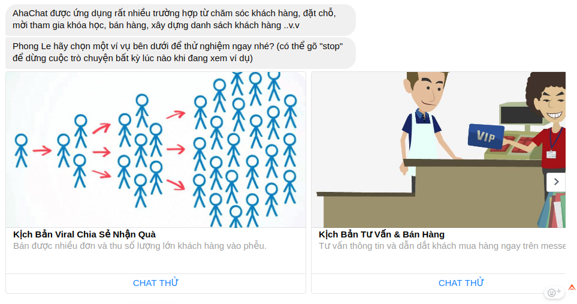
Đối với Thẻ ảnh thì tỉ lệ chuẩn FB quy định là 1.91 x 1 (ảnh ngang) và 1 x 1 (ảnh vuông). Nó giống nhau trên ứng dụng di động Messenger, hộp trò chuyện Facebook và phiên bản trình duyệt Messenger.
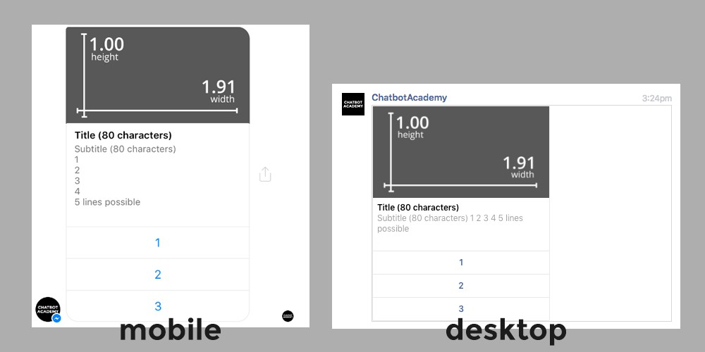
9.1 Ảnh ngang
Kích thước ảnh ngang được đề xuất là 909 x 476px, giúp phương tiện của bạn hiển thị hoàn hảo trên hầu hết mọi thiết bị.
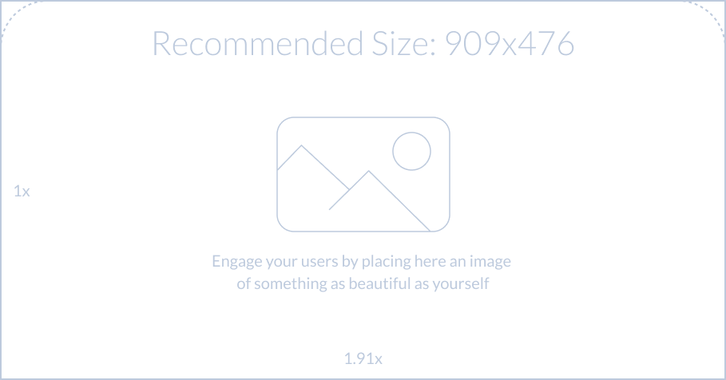
Nếu ảnh ngang của bạn nhỏ hơn thì kích thước tối thiểu phải là 500 x 262px để hiển thị tốt trên mọi thiết bị.
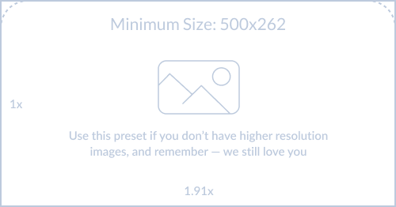
9.2 Ảnh vuông
Kích thước được đề xuất là 900 x 900px - hình ảnh của bạn sẽ lớn hơn và sắc nét hơn với độ phân giải này.
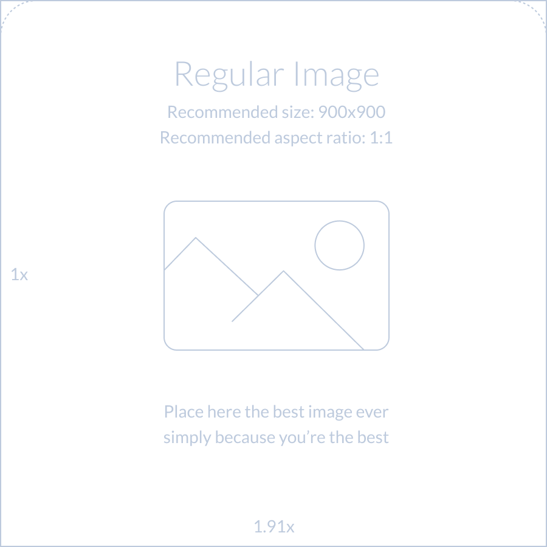
Nếu ảnh vuông của bạn nhỏ hơn thì kích thước tối thiểu phải là 500 x 500px để hiển thị tốt trên mọi thiết bị.
9.3 Lưu ý
Không có gì sai khi bạn gửi các hình ảnh có kích thước 900 x 500px hay 450 x 250px. Nhưng lưu ý, đừng để độ dài của 2 cạnh liền kề hơn nhau quá 2 lần.
Khi hiển thị trên messenger, hình ảnh có thể thay đổi trong phạm vi kích thước dài và cao theo tỉ lệ từ 1:2 đến 2:1.
Bất kì hình ảnh nào có tỉ lệ lớn hơn 2:1 sẽ được cắt bớt ở phần đỉnh và đáy. Cũng tương tự với hình ảnh có tỉ lệ lớn hơn 1:2 sẽ được cắt bớt ở phần bên trái và bên phải.
Bạn có bất kỳ câu hỏi nào liên quan đến kích thước ảnh tiêu chuẩn trong Facebook và Chatbot? Bạn muốn khởi chạy chiến dịch tiếp cận khách hàng của mình bằng Chatbot với một số lời khuyên chuyên môn từ Đối tác tiếp thị của Facebook? Đừng ngần ngại liên hệ với chúng tôi để có câu trả lời nhanh nhất và hiệu quả nhất! Tận hưởng công cụ chatbot miễn phí của chúng tôi mà không cần phải trả bất kỳ chi phí nào!